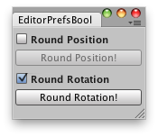

Sets the value of the preference identified by key.

Round rotations/positions and remember the active option.
// Simple script that lets you round rotations and
// round your positions of your selected objects.
// and it remembers which option is being active
class EditorPrefsBool extends EditorWindow {
var showRoundPosition : boolean = true;
var showRoundRotation : boolean = true;
@MenuItem("Examples/Round positions-rotations")
static function Init() {
var window = GetWindow(EditorPrefsBool);
window.Show();
}
function OnGUI() {
showRoundPosition = EditorGUILayout.BeginToggleGroup("Round Position",showRoundPosition);
if(GUILayout.Button("Round Position!"))
DoRoundPosition();
EditorGUILayout.EndToggleGroup();
showRoundRotation = EditorGUILayout.BeginToggleGroup("Round Rotation", showRoundRotation);
if(GUILayout.Button("Round Rotation!"))
DoRoundRotation();
EditorGUILayout.EndToggleGroup();
}
function DoRoundPosition() {
for (var t : Transform in Selection.transforms)
t.localPosition = Vector3(Mathf.Round(t.localPosition.x),
Mathf.Round(t.localPosition.z),
Mathf.Round(t.localPosition.y));
}
function DoRoundRotation() {
for (var t : Transform in Selection.transforms)
t.rotation = Quaternion.Euler(
Vector3(Mathf.Round(t.eulerAngles.x / 45f) * 45f,
Mathf.Round(t.eulerAngles.y / 45f) * 45f,
Mathf.Round(t.eulerAngles.z / 45f) * 45f));
}
function OnFocus() {
if(EditorPrefs.HasKey("ShowRoundPosition"))
showRoundPosition = EditorPrefs.GetBool("ShowRoundPosition");
if(EditorPrefs.HasKey("ShowRoundRotation"))
showRoundPosition = EditorPrefs.GetBool("ShowRoundRotation");
}
function OnLostFocus() {
EditorPrefs.SetBool("ShowRoundPosition", showRoundPosition);
EditorPrefs.SetBool("ShowRoundRotation", showRoundRotation);
}
function OnDestroy() {
EditorPrefs.SetBool("ShowRoundPosition", showRoundPosition);
EditorPrefs.SetBool("ShowRoundRotation", showRoundRotation);
}
}